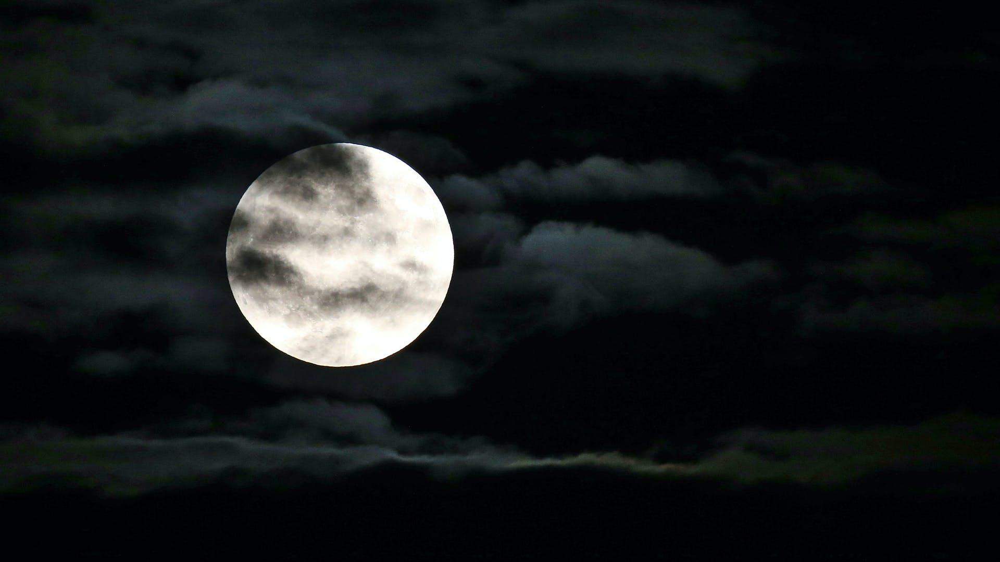

Moon

What is a Moon?
Planets and asteroids in our solar system orbit the Sun. Moons — also known as natural satellites — orbit planets and asteroids. There are more than
200 moons in our solar system. Most orbit the giant planets — with Saturn and Jupiter leading moon counts —
but even smaller worlds like Pluto can have five moons in orbit.
Moons come in many shapes, sizes and types. Most are airless, but a few have atmospheres and even hidden oceans. There are dozens of moons
in our solar system — even a few asteroids have small companion moons.